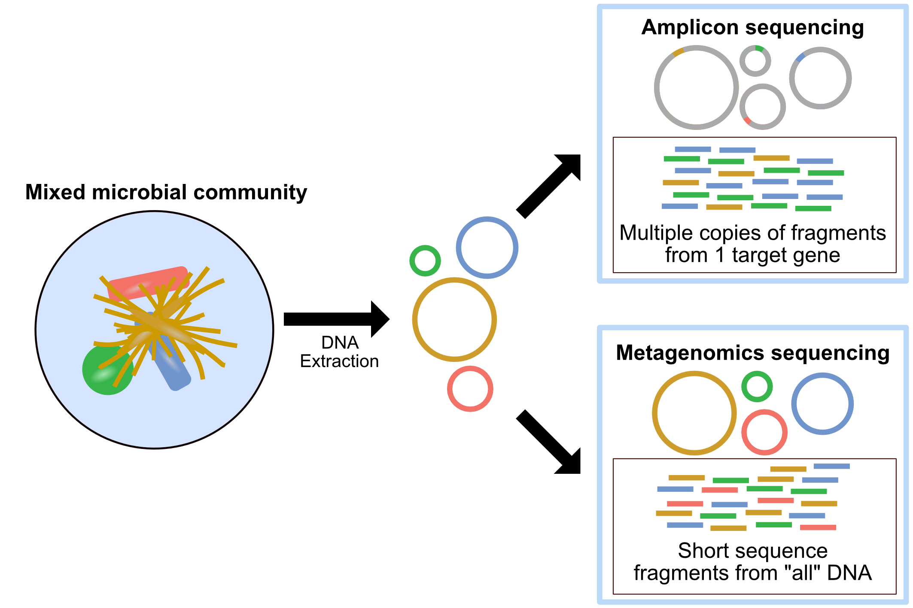

1. Introduction to Metagenomics
Metagenomics is the study of genetic material directly from the an environmental or clinical sample by sequencing. This is in contrast to microbial isolate sequencing which relies on a culture of identical cells a source of genetic material.
Metagenomics is all about understanding the sum of the genetic material within a sample. It has been used for a wide range of applications including:
- Agriculture and soil microbiome
- Screening for novel enzymes, antibiotics, and other useful compounds
- Functional ecology
- Environmental pollution and remediation
- Wildlife conservation
- Gut microbiome
- Healthcare diagnostics
Amplicon Sequencing vs Metagenomic Sequencing
You may sometimes see metagenomics as an umbrella term for two sequencing strategies: amplicon sequencing, and metagenomic sequencing. Amplicon sequencing, which is also know as metabarcoding, targets one or more specific genes via primers, and amplifies these genes for sequencing. The most commonly used gene is the 16S rRNA gene. This approach is mainly used to identify taxonomic profiles. Metagenomics on the other hand, targets entire genomes, and allows for the detection of encoded proteins and pathways, as well as taxonomic assignments at species or even strain resolution. For this reason, amplicon sequencing should not be referred to as metagenomics.

What is metagenomic sequecning?
In this course, we will be focusing on metagenomic sequencing (aka shotgun sequencing). In metagenomics, DNA is extracted from the sample of interest and sheared into small fragments which are then sequenced. This results in DNA sequences known as reads, which correspond to sections across all the different genomes within the sample. Some of these reads will be sampled from taxonomically informative regions such as marker genes (e.g. 16S rRNA, 18S rRNA, ITS) or regions that encode biological functions (e.g. antibiotic resistance genes, efflux, nucleotide salvage). These reads allow us to simultaneously identify what is in the sample, and what they able to do.
Metagenomic sequencing platforms
These days metagenomic sequencing is typically carried out on an Illumina* sequencing platform, although sometimes you will see samples that are sequenced using other high-throughput sequencing technologies such as 454 pyrosequencing, Ion semiconductor sequencing, and SOLiD seqeuncing. Long-read metagenomic sequencing with Nanopore or PacBio technologies is a new but rapidly evolving field which produces substantially longer reads. In this course we will only be looking at Illumina sequencing reads, as this is by far the most common source of metagenomic data, but some of the workflow steps are applicable to the output of the other platforms.
How Illumina metagenomic sequencing works
The metagenomic sequencing process starts with purified DNA. This DNA extraction and purification process will differ based on the sample of interest and goals of the experiment, but most protocols use silica spin column kits as they can rapidly extract DNA with high purity. Once DNA is purified, a sequencing library needs to be generated. An Illumina sequencing library can be created either with tagmentation or sonication. In tagmentation, transposases are used to simultaneously cut the DNA into small fragments (50 - 500 bp) and add adaptor sequences. Sonication is used to mechanically fragment DNA sequences into similar sizes, before adaptors are added using DNA polymerase and ligase. These adaptors are made up of three sections: a sequence that is complementary to oligonucleotides attached to the surface of a flow cell, which act as a solid support, a binding site for the sequencing primer, and a barcode sequence. As multiple samples are often sequenced at the same time, the barcode sequence is used an identifier for the sample so that the reads can be grouped together during data analysis.
The modified DNA is then washed over the flow cell and the adaptors attach to the complementary solid support. A phase called cluster generation then begins, where hundreds of identical strands of DNA are created through bridge amplication PCR. If you want to read more about this process, Apollo Institute have a great article on it here.
Sequencing primers and fluorescently tagged nucleotides are then added to the flow cell. The primers attach to the binding site on the adaptor sequences, and a DNA polymerase adds a nucleotide to the nascent DNA strand starting from the primer. Each of the four nucleotide bases has a different fluorophore, and after each round of synthesis, they are excited using a light source, resulting in the release of a unique wavelength signal which is recorded by a camera. Only once nucleotide is added in each round by the polymerase, as the fluorophore acts a blocking group. This process repeats until the entire DNA molecule is sequenced. Using this “sequencing by synthesis” approach millions of DNA reads can be sequenced per run.
Illumina produced a video going over their “sequencing by synthesis” workflow which provides a great 3D schematic representation of the technology:
This process is quite complex so don’t be concerned if you don’t fully understand it straight away, as it is not essential to the bioinformatics you’ll learn in this course. However, knowledge of the overall process is useful as it allows us to understand where the data is coming from, as well as its benefits and limitations.